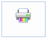

Print a document
-
In the active document window, display the model or the draft sheet or the Draw In View window that contains the design that you want to print.
-
On the File menu, click Paper Print.
-
From the Printer list, select the printer you want to use.
-
In the Number of copies box, type the number of copies you want.
-
Select any other print options.
For more information, see Paper Print settings for draft documents or Paper Print settings for model documents.
-
Click the Print command.

In a draft document, you can use the Sheets box to specify the range of pages you want to print. You also can use the arrow controls under the print preview image to scroll to a single sheet that you want to print using the Current display option.
When printing from the 2D Model Sheet or from the Draw In View window, you can print only what is currently displayed in the sheet or window.
How do I
Print to a filePrint an area
Print at a 1:1 scale
Print a composite drawing
Print to Adobe PDF
Change PDF printer properties
Learn more
Printing documentsUsing the Paper Print page
Printing composite drawings
Look up more details
Paper Print settings for draft documentsPaper Print settings for model documents
(Print) Options dialog box
Print Area dialog box
Options-Multiple Sheets per Page
Options - Single Sheet per Page
Print Drawings - Select Sheets dialog box
Print Drawings - Select Documents dialog box
Preview dialog box